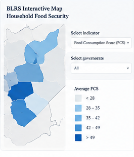

Building Local Resilience in Syria (BLRS) – Data Analysis and Visualisation
INTERNATIONAL SECURITY AND DEVELOPMENT CENTER (ISDC)
Analysis and visualisation of large-scale household panel data for an RCT-based impact evaluation of a resilience programme in Syria.
- Cleaned, merged and harmonized 80,000+ household observations from panel survey data.
- Constructed FIES/FCS indicators and contributed to Theory of Change design and indicator framework.
- Co-authored a food-security brief and developed interactive R Shiny and HTML mapping outputs.

Illustrative visual preview